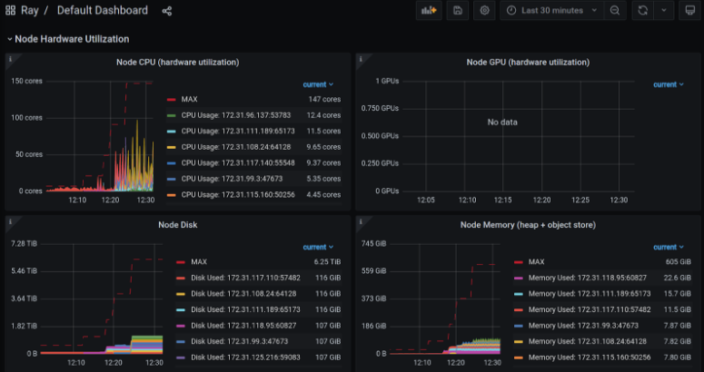

Collecting and monitoring metrics
Contents
Collecting and monitoring metrics#
Metrics are useful for monitoring and troubleshooting Ray applications and Clusters. For example, you may want to access a node’s metrics if it terminates unexpectedly.
Ray records and emits time-series metrics using the Prometheus format. Ray does not provide a native storage solution for metrics. Users need to manage the lifecycle of the metrics by themselves. This page provides instructions on how to collect and monitor metrics from Ray Clusters.
System and application metrics#
Ray exports metrics if you use ray[default], ray[air], or other installation commands that include Dashboard component. Dashboard agent process is responsbile for aggregating and reporting metrics to the endpoints for Prometheus to scrape.
System metrics: Ray exports a number of system metrics. View system metrics for more details about the emitted metrics.
Application metrics: Application-specific metrics are useful for monitoring your application states. View adding application metrics for how to record metrics.
Setting up your Prometheus server#
Use Promtheus to scrape metrics from Ray Clusters. Ray doesn’t start Prometheus servers for users. Users need to decide where to host and configure it to scrape the metrics from Clusters.
Tip
The instructions below describe one way of setting up Prometheus on your local machine. View Prometheus documentation for the best strategy to set up your Prometheus server.
For KubeRay users, follow these instructions to set up Prometheus.
First, download Prometheus. Make sure to download the correct binary for your operating system. (For example, Darwin for macOS X.)
Then, unzip the archive into a local directory using the following command:
tar xvfz prometheus-*.tar.gz
cd prometheus-*
Ray provides a Prometheus config that works out of the box. After running Ray, you can find the config at /tmp/ray/session_latest/metrics/prometheus/prometheus.yml.
global:
scrape_interval: 15s
evaluation_interval: 15s
scrape_configs:
# Scrape from each Ray node as defined in the service_discovery.json provided by Ray.
- job_name: 'ray'
file_sd_configs:
- files:
- '/tmp/ray/prom_metrics_service_discovery.json'
Next, start Prometheus:
./prometheus --config.file=/tmp/ray/session_latest/metrics/prometheus/prometheus.yml
Note
If you are using macOS, you may receive an error at this point about trying to launch an application where the developer has not been verified. See the “Troubleshooting” guide below to fix the issue.
Now, you can access Ray metrics from the default Prometheus URL, http://localhost:9090.
Troubleshooting#
Using Ray configurations in Prometheus with Homebrew on macOS X#
Homebrew installs Prometheus as a service that is automatically launched for you. To configure these services, you cannot simply pass in the config files as command line arguments.
Instead, change the –config-file line in /usr/local/etc/prometheus.args to read --config.file /tmp/ray/session_latest/metrics/prometheus/prometheus.yml.
You can then start or restart the services with brew services start prometheus.
macOS does not trust the developer to install Prometheus#
You may receive the following error:

When downloading binaries from the internet, macOS requires that the binary be signed by a trusted developer ID. Many developers are not on macOS’s trusted list. Users can manually override this requirement.
See these instructions for how to override the restriction and install or run the application.
Scraping metrics#
Ray runs a metrics agent per node to export system and application metrics. Each metrics agent collects metrics from the local node and exposes them in a Prometheus format. You can then scrape each endpoint to access the metrics.
To scrape the endpoints, we need to ensure service discovery, which allows Prometheus to find the metrics agents’ endpoints on each node.
Auto-discovering metrics endpoints#
You can allow Prometheus to dynamically find the endpoints to scrape by using Prometheus’ file based service discovery. Use auto-discovery to export Prometheus metrics when using the Ray cluster launcher, as node IP addresses can often change as the cluster scales up and down.
Ray auto-generates a Prometheus service discovery file on the head node to facilitate metrics agents’ service discovery. This function allows you to scrape all metrics in the cluster without knowing their IPs. The following information guides you on the setup.
The service discovery file is generated on the head node. On this node, look for /tmp/ray/prom_metrics_service_discovery.json (or the eqiuvalent file if using a custom Ray temp_dir). Ray periodically updates this file with the addresses of all metrics agents in the cluster.
Ray automatically produces a Prometheus config, which scrapes the file for service discovery found at /tmp/ray/session_latest/metrics/prometheus/prometheus.yml. You can choose to use this config or modify your own config to enable this behavior. See the details of the config below. Find the full documentation here.
With this config, Prometheus automatically updates the addresses that it scrapes based on the contents of Ray’s service discovery file.
# Prometheus config file
# my global config
global:
scrape_interval: 2s
evaluation_interval: 2s
# Scrape from Ray.
scrape_configs:
- job_name: 'ray'
file_sd_configs:
- files:
- '/tmp/ray/prom_metrics_service_discovery.json'
Manually discovering metrics endpoints#
If you know the IP addresses of the nodes in your Ray Cluster, you can configure Prometheus to read metrics from a static list of endpoints.
Set a fixed port that Ray should use to export metrics. If you’re using the VM Cluster Launcher, pass --metrics-export-port=<port> to ray start. If you’re using KubeRay, specify rayStartParams.metrics-export-port in the RayCluster configuration file. You must specify the port on all nodes in the cluster.
If you do not know the IP addresses of the nodes in your Ray Cluster, you can also programmatically discover the endpoints by reading the Ray Cluster information. The following example uses a Python script and the ray.nodes API to find the metrics agents’ URLs, by combining the NodeManagerAddress with the MetricsExportPort.
# On a cluster node:
import ray
ray.init()
from pprint import pprint
pprint(ray.nodes())
"""
Pass the <NodeManagerAddress>:<MetricsExportPort> from each of these entries
to Prometheus.
[{'Alive': True,
'MetricsExportPort': 8080,
'NodeID': '2f480984702a22556b90566bdac818a4a771e69a',
'NodeManagerAddress': '192.168.1.82',
'NodeManagerHostname': 'host2.attlocal.net',
'NodeManagerPort': 61760,
'ObjectManagerPort': 61454,
'ObjectStoreSocketName': '/tmp/ray/session_2020-08-04_18-18-16_481195_34255/sockets/plasma_store',
'RayletSocketName': '/tmp/ray/session_2020-08-04_18-18-16_481195_34255/sockets/raylet',
'Resources': {'CPU': 1.0,
'memory': 123.0,
'node:192.168.1.82': 1.0,
'object_store_memory': 2.0},
'alive': True},
{'Alive': True,
'MetricsExportPort': 8080,
'NodeID': 'ce6f30a7e2ef58c8a6893b3df171bcd464b33c77',
'NodeManagerAddress': '192.168.1.82',
'NodeManagerHostname': 'host1.attlocal.net',
'NodeManagerPort': 62052,
'ObjectManagerPort': 61468,
'ObjectStoreSocketName': '/tmp/ray/session_2020-08-04_18-18-16_481195_34255/sockets/plasma_store.1',
'RayletSocketName': '/tmp/ray/session_2020-08-04_18-18-16_481195_34255/sockets/raylet.1',
'Resources': {'CPU': 1.0,
'memory': 134.0,
'node:192.168.1.82': 1.0,
'object_store_memory': 2.0},
'alive': True}]
"""
Processing and exporting metrics#
If you need to process and export metrics into other storage or management systems, check out open source metric processing tools like Vector.
Monitoring metrics#
To visualize and monitor collected metrics, there are 3 common paths:
Simplist: Use Grafana with Ray-provided configurations, which include default Grafana dashboards showing some of the most valuable metrics for debugging Ray applications.
Recommended: Use Ray Dashboard which embeds Grafana visualizations and look at metrics together with logs, Job info and so on in a single pane of glass.
Manual: Set up Grafana or other tools like CloudWatch, Cloud Monitoring, and Datadog from scratch.
Here are some instructions for each of the paths:
Simplist: Setting up Grafana with Ray-provided configurations#
Grafana is a tool that supports advanced visualizations of Prometheus metrics and allows you to create custom dashboards with your favorite metrics.
Note
The instructions below describe one way of starting a Grafana server on a macOS machine. Refer to the Grafana documentation for how to start Grafana servers in different systems.
For KubeRay users, follow these instructions to set up Grafana.
First, download Grafana. Follow the instructions on the download page to download the right binary for your operating system.
Go to the location of the binary and run Grafana using the built-in configuration found in the /tmp/ray/session_latest/metrics/grafana folder.
./bin/grafana-server --config /tmp/ray/session_latest/metrics/grafana/grafana.ini web
Access Grafana using the default grafana URL, http://localhost:3000.
See the default dashboard by going to dashboards -> manage -> Ray -> Default Dashboard. The same metric graphs are accessible in Ray Dashboard after you integrate Grafana with Ray Dashboard.
Note
If this is your first time using Grafana, login with the username: admin and password admin.

Troubleshooting: Using Ray configurations in Grafana with Homebrew on macOS X
Homebrew installs Grafana as a service that is automatically launched for you. Therefore, to configure these services, you cannot simply pass in the config files as command line arguments.
Instead, update the /usr/local/etc/grafana/grafana.ini file so that it matches the contents of /tmp/ray/session_latest/metrics/grafana/grafana.ini.
You can then start or restart the services with brew services start grafana and brew services start prometheus.
After your Grafana server is running, find the Ray-provided default Grafana dashboard JSON at /tmp/ray/session_latest/metrics/grafana/dashboards/default_grafana_dashboard.json. Import this dashboard to your Grafana.
If Grafana reports that datasource is not found, add a datasource variable and using JSON model view, change all values of datasource key in the imported default_grafana_dashboard.json to the name of the variable. For example, if the variable name is data_source, all "datasource" mappings should be:
"datasource": {
"type": "prometheus",
"uid": "$data_source"
}
Recommended: Use Ray Dashboard with embedded Grafana visualizations#
Follow the instructions above to set up Grafana with Ray-provided visualizations
View configuring and managing Ray Dashboard for how to embed Grafana visualizations into Dashboard
View Dashboard’s metrics view for how to inspect the metrics in Ray Dashboard.
Manual: Set up Grafana, or other tools like CloudWatch, Cloud Monitoring and Datadog from scratch#
Refer to the documentation of these tools for how to query and visualize the metrics.
Tip
If you need to write Prometheus queries manually, check out the Prometheus queries in Ray-provided Grafana dashboard JSON at /tmp/ray/session_latest/metrics/grafana/dashboards/default_grafana_dashboard.json for inspiration.